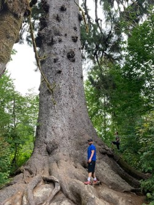

Thanks for stopping by!
My name is Kevan Meratinia. I presently reside in the Mountlake Terrace/Lynnwood area. I am passionate about health and wellness and enjoy spending time with friends and family. I grew up in Seattle and graduated from Ballard High School in 2009. For my final project, I built a website for my grandma about her Indian Tlinket Basket collection. This was my first spark of interest in web development.
I am currently enrolled at Edmonds Community College in the CIS 241 Class. I am in their Associate in Technical Arts Degree - Web Application and Cloud Developer.  I have some experience with web development from my recent years at Ballard High, Seattle Central Community College, and Bellevue College. I enjoy web development because to me its like finding pieces to the puzzle. I like to think of myself as a natural problem solver, and I enjoy finding solutions via trial and error.
Some of my interests include Nutrition, Exercise, and anything Outdoors. A good day to me is when I am outside in nature, breathing fresh air and enjoying the beautiful scenery. I welcome you check out my interests page where I will discuss these further. Again, thank you for taking the time to check out my web site!